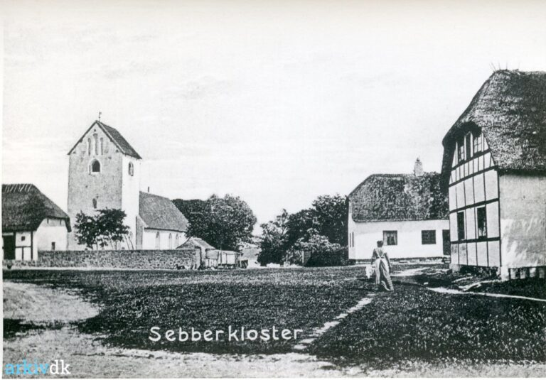

<section class="section" id="kort">
  <div class="container">

    <h2 class="section-title">
      Her ligger Sebber Kloster
      <span id="secret-paw-trigger" style="cursor: pointer; font-size: 1.3rem; vertical-align: middle; margin-left: 8px; opacity: 0.4;" title="Hvad mon kattene pønser på?">🐾</span>
    </h2>
    <p class="section-intro">Få et overblik over området og planlæg din transport.</p>

    <div class="map-flip-container" id="cat-map-container">
      <div class="map-flipper">
        
        <div class="map-front">
          <iframe 
            src="https://www.google.com/maps/embed?pb=!1m18!1m12!1m3!1d2175.2353473343687!2d9.534245877324086!3d56.96190099822039!2m3!1f0!2f0!3f0!3m2!1i1024!2i768!4f13.1!3m3!1m2!1s0x46493f2a6f1da449%3A0xc566228b7fffb4f4!2sSebber%20Kloster!5e0!3m2!1sda!2sdk!4v1765358252081!5m2!1sda!2sdk" 
            loading="lazy" 
            referrerpolicy="no-referrer-when-downgrade" 
            allowfullscreen>
          </iframe>
        </div>

        <div class="map-back">
          <div class="cat-plan-content">
            <h3>🐾 Aslak & Draculas Masterplan</h3>
            
            <div class="cat-tactics">
              <p><strong>📍 Vielsesområdet:</strong> Perfekt sted til en lur under talerne (kræver at en gæst har et blødt tæppe).</p>
              <p><strong>📍 Køkkenet:</strong> Taktisk knudepunkt. Her stjæler vi laks kl. 18:45 præcis.</p>
              <p><strong>📍 Dansegulvet:</strong> Forbudt område! Stor fare for trådte poter efter midnat.</p>
              <p><strong>📍 Gavebordet:</strong> Fremragende papkasser. Vi glæder os mest til at sove i kasserne.</p>
            </div>
            
            <span class="cat-signature">- Mjav fra cheferne</span>
          </div>
        </div>

      </div>
    </div>

    <div class="place-story" aria-label="Om Sebber Kloster">
      <p class="place-lead">Historiens vingesus og ro i kroppen.</p>
          
      <h3 class="place-title">Fortællingen om Sebber Kloster</h3>
      
      <div class="story-grid">
        <div class="story-text">
          <p>
            Sebber Kloster er meget mere end blot en smuk bygning. Stedet har rødder helt tilbage til middelalderen, hvor det oprindeligt fungerede som et benediktinernonnekloster og nævnes første gang i skrifter fra 1268. Efter reformationen overgik klosteret til Kronen, før det blev til den private herregård, vi kender i dag.
          </p>
          <p>
            Den smukke klosterkirke står her stadig. Kigger man godt efter på murværket, kan man endnu ane sporene fra dengang, hvor nonnerne sad på deres eget lille galleri, højt hævet over menigheden.
          </p>
          <p>
            Området er også fyldt med spændende myter. Lige på den anden side af bugten lå engang en travl vikinge-handelsplads, og lokale sagn hvisker både om hemmelige bjergfolk i Skt. Nikolaj Bjerg og om et venligt spøgelse af en tjenestepige, der af og til svæver forbi mod kirkegården i de lyse sommernætter.
          </p>
        </div>

        <div class="story-image">
          
          <span class="image-caption">Sebber Klosterkirke har stået her siden middelalderen.</span>
        </div>
      </div>
    </div>

  </div>
</section>